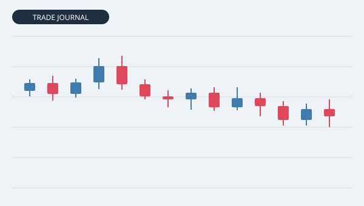
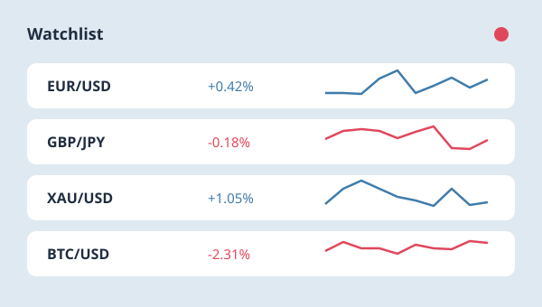
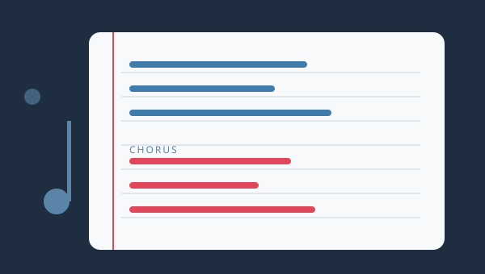

Trade Journal
A simple web app for logging trades: entry, exit, stop-loss and the reason behind each one. It works out win rate and risk-to-reward automatically, so every trade becomes a lesson.
Projects that bring together the things I care about most: the financial markets, music, and building tools that help people.

A simple web app for logging trades: entry, exit, stop-loss and the reason behind each one. It works out win rate and risk-to-reward automatically, so every trade becomes a lesson.

A clean dashboard for the currency pairs and assets I follow. Each one gets a mini price chart, a daily change and notes on key support and resistance levels.

A digital notebook for song ideas. You can organise lyrics by verse and chorus, tag the key and mood, and attach a voice memo of the melody before you forget it.